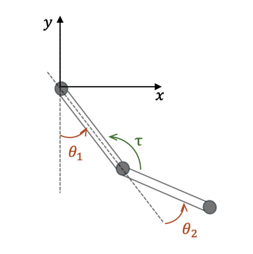
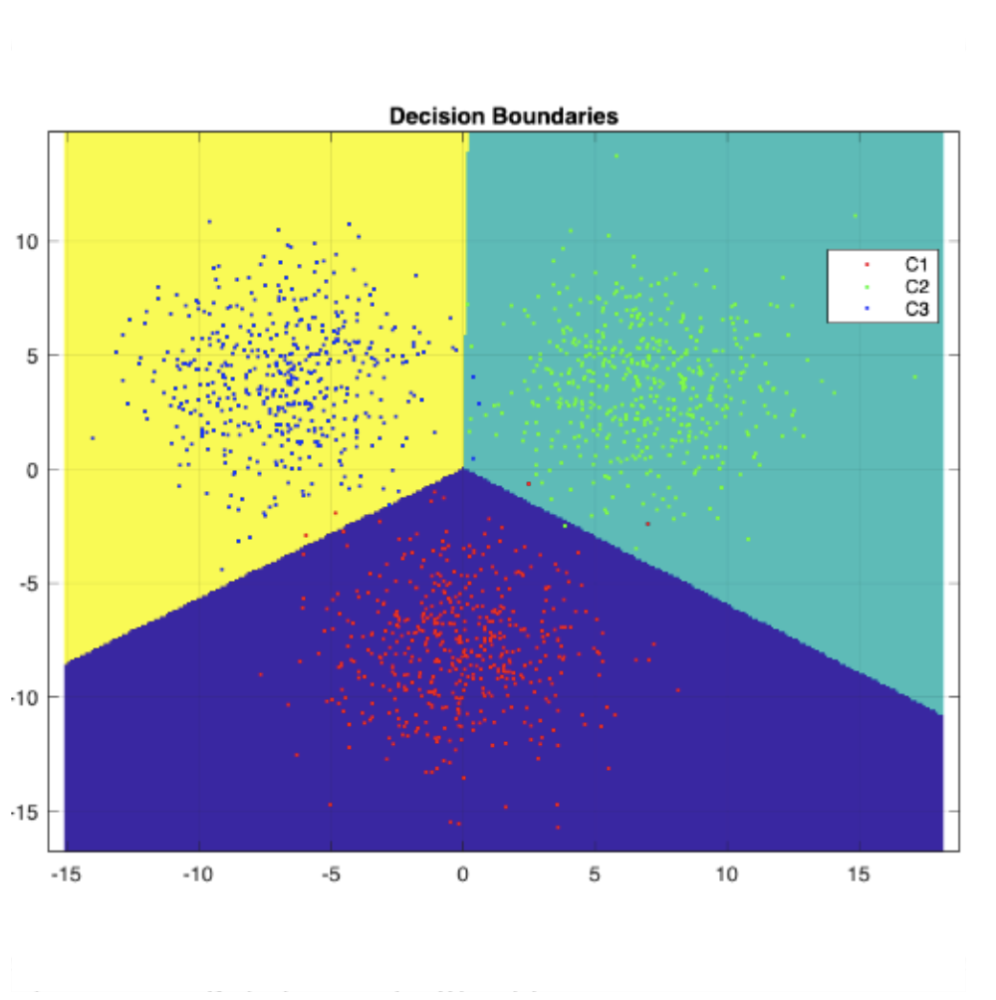
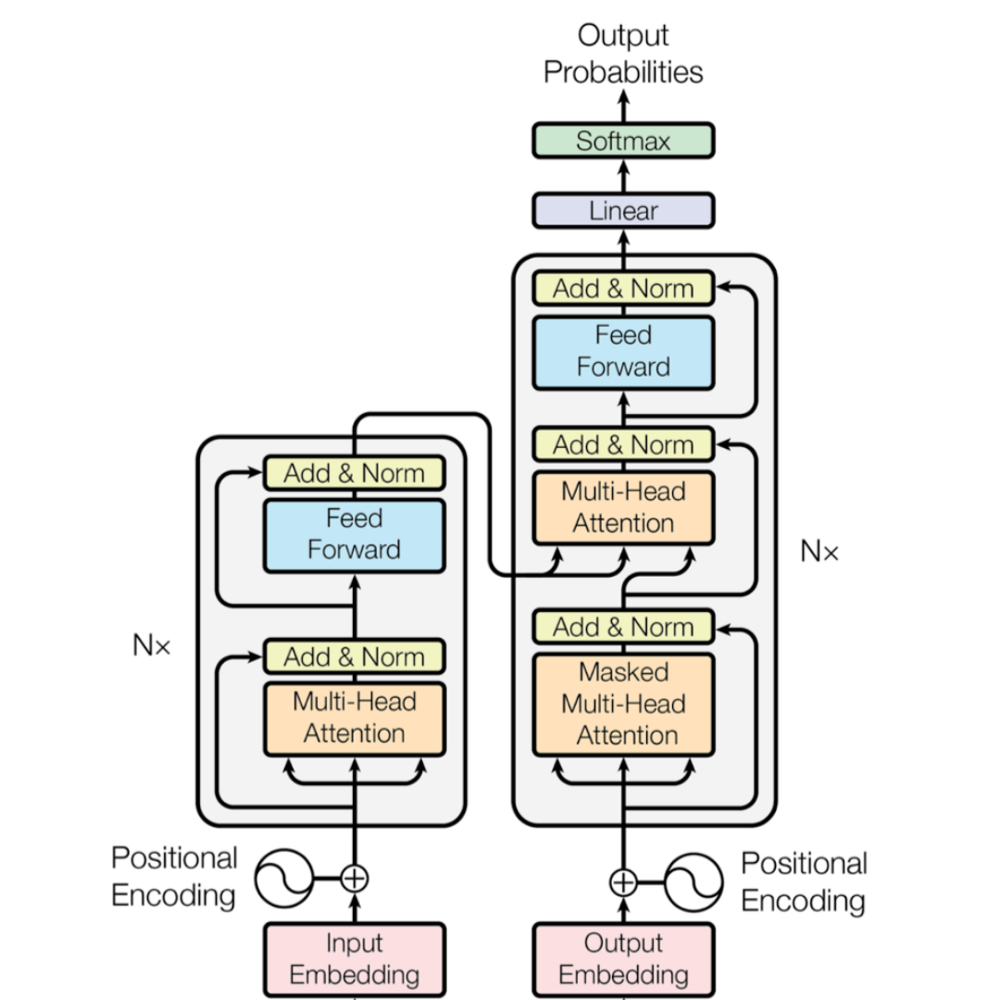

I am a Master's student in Automation Engineering with a strong analytical mindset and a proven track record of meeting tight deadlines.
Adept at collaborative problem-solving and technical integration, with a solid academic foundation in Automatic Control, Mechanics, and Computer Science.
I am deeply passionate about robotics, automotive systems, and additive manufacturing (3D printing).
Alma Mater Studiorum - University of Bologna
Focus: System theory and advanced control • Image processing and computer vision • Industrial robotics • Deep learning • Autonomous and mobile robotics • Automation software.
Alma Mater Studiorum - University of Bologna
Focus: Automatic Control • Electronics for Automation • Automatic Machines • Mechanics • Computer Science.
Liceo Scientifico R.L. Montalcini, Rotonda
G.D S.p.A. (Coesia Group)
Focus: Safety analysis on automated packaging machinery • Performance Level (PL) calculation (EN ISO 13849-1) • Hardware architecture verification (Category, MTTFd, DC, CCF).

Optimal Control

Learning and Estimation of Dynamical Systems

Deep Learning